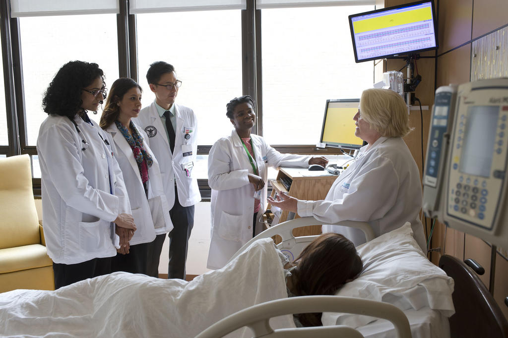

Welcome to Vought Hospital
Welcome to Vought Hospital, where compassionate care meets medical excellence. Our team of dedicated healthcare professionals is committed to providing the highest quality treatment in a safe, patient-centered environment. Whether you’re here for a routine check-up or advanced medical care, we are here to support you on your journey to health and well-being. At Vought Hospital, your health is our priority, and we strive to deliver personalized care with the latest medical innovations and a warm, welcoming touch.
Our Services
At Vought Hospital, we offer a comprehensive range of healthcare services designed to meet the diverse needs of our patients. From primary care and preventive health services to advanced diagnostics, specialized surgeries, and rehabilitation, our multidisciplinary team is dedicated to providing top-notch care at every stage of your health journey. Our state-of-the-art facilities are equipped with the latest medical technology, ensuring that you receive the most accurate diagnosis and effective treatment possible. No matter the complexity of your condition, we are here to offer you compassionate, personalized care to help you achieve optimal health.
Emergency Care

24/7 emergency services to handle critical conditions.
At Vought Hospital, our Emergency Care Department is available 24/7 to provide immediate and life-saving medical attention when it matters most. Staffed with highly trained emergency physicians, nurses, and specialists, we are equipped to handle a wide range of medical emergencies, from minor injuries to critical conditions. With cutting-edge technology and rapid response protocols, our team ensures timely diagnosis, treatment, and stabilization. Whether you’re facing an urgent health concern or a major trauma, our emergency care services are designed to deliver fast, effective, and compassionate care whenever you need it.
Outpatient Services
Regular check-ups and non-emergency procedures.
Our Outpatient Services at Vought Hospital provide convenient, high-quality medical care without the need for an overnight stay. Whether you’re visiting for routine check-ups, diagnostic tests, minor procedures, or specialist consultations, our outpatient department is designed to meet your healthcare needs efficiently and comfortably. With a focus on personalized care and prompt service, we ensure that you receive expert treatment in a timely manner, allowing you to return to your daily routine as quickly as possible. At Vought Hospital, we are committed to making your outpatient experience seamless, comprehensive, and supportive.
Inpatient Services
Comfortable and well-equipped rooms for extended stays.
At Vought Hospital, our Inpatient Services are dedicated to providing exceptional care and comfort for patients who require extended medical attention and hospitalization. Our modern, well-equipped facilities are designed to ensure a safe and healing environment, while our team of experienced physicians, nurses, and healthcare staff work around the clock to deliver personalized, compassionate care. Whether you’re recovering from surgery, managing a chronic condition, or receiving specialized treatment, we prioritize your well-being and comfort throughout your stay. At Vought Hospital, we are committed to supporting you every step of the way on your path to recovery.
- High-quality medical care
- Experienced doctors
- Top-notch medical services
- Emergency services
- Outpatient Consultations
- Inpatient care